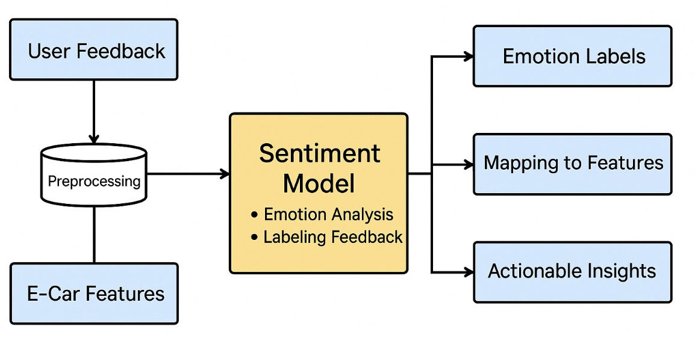

Capgemini Internship - Innovation in Sentiment Analysis
During my internship at Capgemini (China), I confronted a critical business analytics challenge: analyzing user satisfaction and product quality feedback for a major automotive client. This project tested my ability to innovate, adapt, and push beyond traditional analytical techniques.
Initially, we employed a blend of manual reviews and basic algorithmic models to analyze positive feedback and identify key drivers of satisfaction. While this provided actionable insights into popular vehicle features and boosted user retention strategies, the analysis of negative feedback revealed serious gaps:
- Low-frequency critical issues were overlooked.
- Manual extraction introduced subjectivity.
- Sentiment models oversimplified user emotions (binary classification).
It became clear that traditional keyword-based sentiment analysis was insufficient to capture the true depth and complexity of user experiences.
To address these challenges, I proposed an innovative strategy endorsed by my manager: using ChatGLM, a Chinese-focused large language model, for automated labeling, emotion analysis, and deeper interpretation of feedback.
I introduced prompt engineering techniques — crafting detailed instructions and example-driven prompts — to maximize ChatGLM’s few-shot learning capabilities. This approach allowed us to:
- Capture a broader emotional spectrum beyond simple positive/negative sentiment.
- Automatically label feedback and map complex issues to product features.
- Reduce manual bias and increase analysis scalability.
This experience revealed the transformative potential of large language models in business analytics — shifting how coding and business strategy interact. Instead of rigid pipelines, we began simulating customer journeys directly with natural language prompts, dramatically accelerating innovation cycles.
The project strengthened my commitment to pursue data science seriously. My economics background gave me a strong business intuition, but this project made it clear: mastering analytics tools, machine learning models, and advanced data storytelling techniques was crucial for my future.
- Sentiment analysis and emotional modeling.
- Prompt engineering for LLMs (ChatGLM, ChatGPT).
- Natural Language Processing (NLP) innovation.
- Business-driven data storytelling.
- Cross-functional collaboration and stakeholder communication.
Today, as I deepen my technical expertise through my MSBA studies, I draw upon this transformative project as a foundation — a reminder of the immense possibilities when business understanding and data science innovation come together.